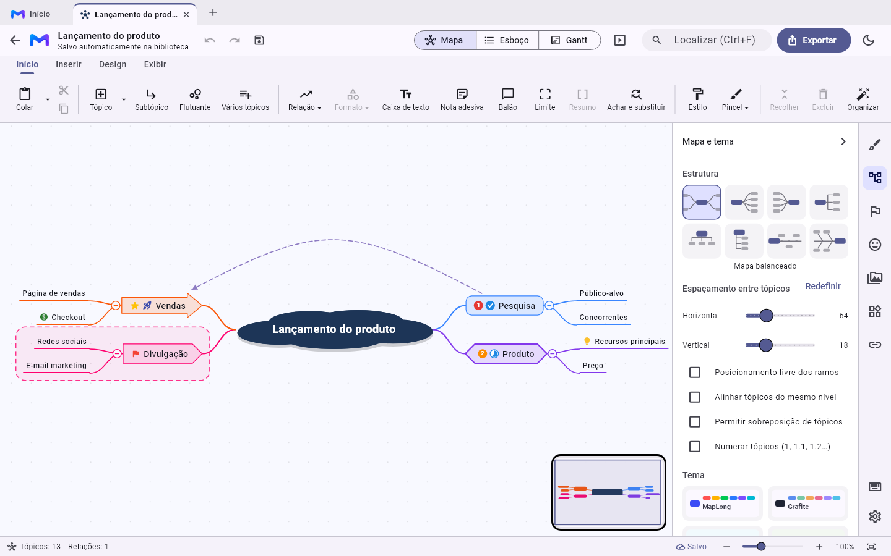
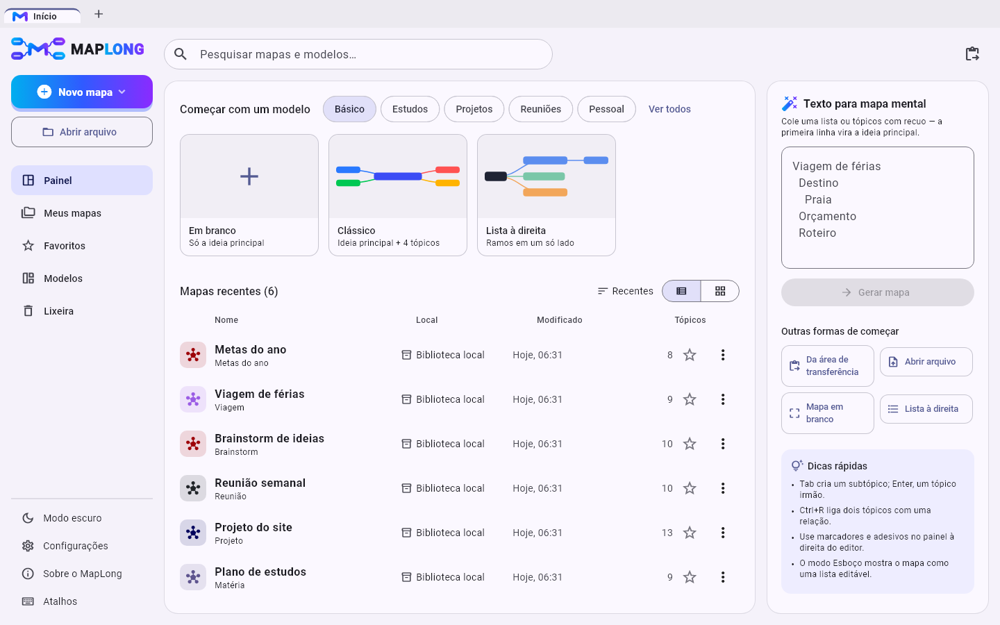
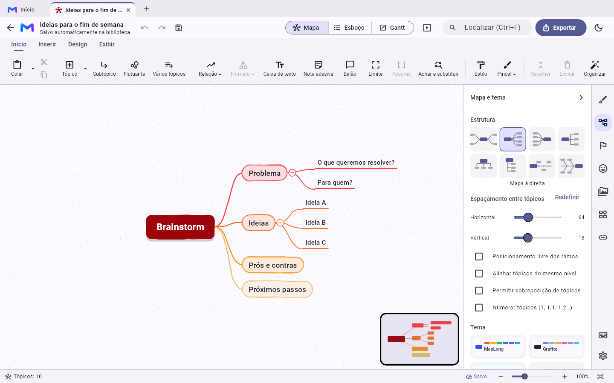
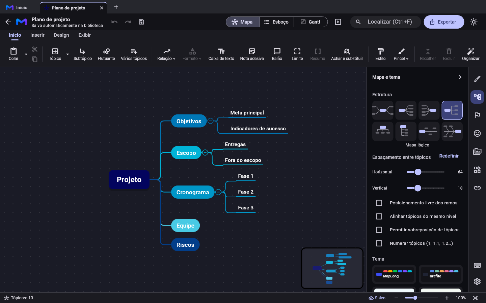

8 estruturas
Mapa mental, lógico, à direita, organograma, árvore, linha do tempo e espinha de peixe.
linkPagamento.
(Este aviso só aparece no seu computador.)
Para Windows · Funciona sem internet
O MapLong transforma qualquer assunto em um mapa claro e bonito em minutos. Tudo fica salvo no seu computador, com 8 estruturas, 27 formas, temas, imagens, documentos, tarefas e exportação para PDF, Word e Excel.
Pagamento único de R$ 69,00 · sem mensalidade · garantia de 7 dias

Recursos
Os recursos dos grandes programas de mapa mental, num aplicativo leve, em português e sem assinatura.
Mapa mental, lógico, à direita, organograma, árvore, linha do tempo e espinha de peixe.
Losango, nuvem, setas, nota adesiva, cores, fontes, bordas, temas e até desenho à mão.
Arraste imagens e arquivos para o mapa, anexe PDFs e planilhas e coloque links em qualquer tópico.
Prioridades, progresso, bandeiras, rostos, setas e centenas de adesivos para destacar o que importa.
Veja o mapa como lista editável ou como cronograma, com datas, responsáveis e progresso.
Apresente ramo a ramo em tela cheia, use o modo Zen para focar e o minimapa para navegar.
PNG, PDF, Word, Excel, HTML, Markdown, TXT, OPML e FreeMind. Também importa esses formatos.
Cada alteração é guardada na hora, com histórico de versões e lixeira para recuperar o que apagou.
Pesquise um assunto e traga resumo, imagem e subtópicos prontos para o mapa.
Organização
Comece com um modelo pronto, cole um texto em tópicos para virar mapa ou abra arquivos de outros programas. Abra vários mapas em abas, como no navegador, e encontre qualquer um pela busca.

Estilo
Escolha entre 16 temas, gere um tema a partir de uma cor, use texturas e imagens de fundo, marca d'água e o estilo de desenho à mão. Salve o seu visual como tema para usar em outros mapas.

Conforto
Interface moderna em português, com faixa de ferramentas, atalhos de teclado e painel lateral. Dois cliques editam um tópico; três cliques criam um tópico ligado a ele.

Como funciona
Pague com Pix, cartão ou boleto na página segura de pagamento.
Logo após a confirmação, chega no seu e-mail o link para baixar o MapLong.
Instale como qualquer programa do Windows e crie seu primeiro mapa em minutos.
Preço
Sem mensalidade e sem surpresas. Se não gostar, peça o reembolso dentro do prazo da garantia.
MapLong para Windows
R$ 69,00
pagamento único
Pagamento processado com segurança pela plataforma de pagamento
Dúvidas
Assim que o pagamento é confirmado, você recebe um e-mail com o link para baixar o instalador. No Pix e no cartão, a confirmação costuma sair em poucos minutos; no boleto, em até 3 dias úteis.
Não. Você paga uma única vez e usa para sempre, com as atualizações incluídas.
Não. O MapLong funciona sem internet e guarda seus mapas no seu computador. A internet só é usada em recursos opcionais, como a pesquisa na Wikipédia e o aviso de novas versões.
No Windows 10 e no Windows 11. Você pode instalar em todos os seus computadores.
Sim. O MapLong importa arquivos FreeMind (.mm), OPML, Markdown e TXT, e exporta para PDF, Word, Excel (CSV), HTML, PNG e outros formatos.
Pix, cartão de crédito (com parcelamento) e boleto, conforme as opções da página de pagamento.
Você tem 7 dias de garantia. É só pedir o reembolso pelo e-mail da compra ou pela plataforma de pagamento.
Sim. Programas novos podem mostrar o aviso "O Windows protegeu o computador". Clique em Mais informações e depois em Executar assim mesmo.
Pagamento único de R$ 69,00. Comece hoje mesmo.
Quero o MapLong ou experimente a versão para navegador